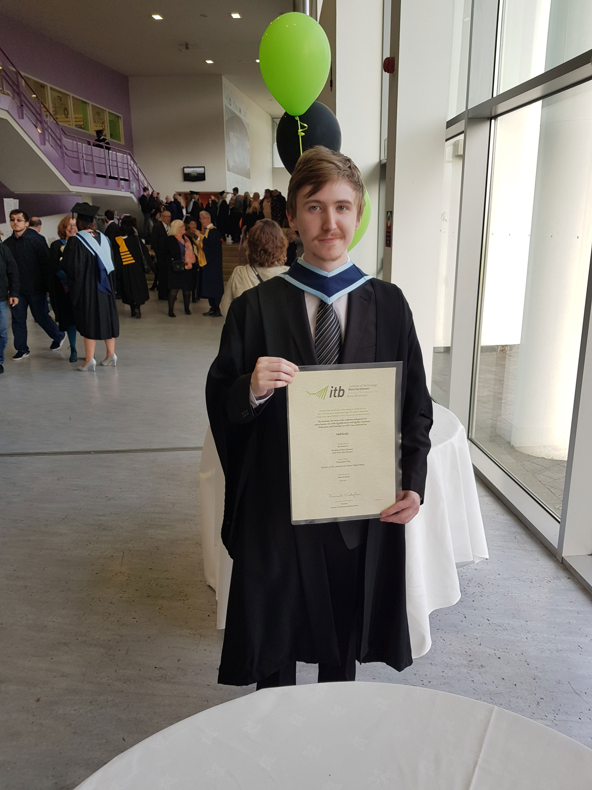
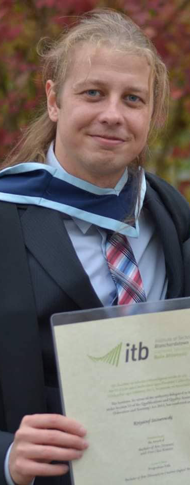

How has your degree at ITB helped you to get to where you are now in your career?
Creative Digital Media in ITB helped me gain a solid understanding of how to handle a project from concept to completion. I found the continuous assessment model very beneficial as deadlines are a big part of day to day tasks within the media industry. My social and communication skills developed greatly due to team assignments & presentations. I learned to take responsibility for myself and my team, not only in work, but in my personal life too. Accepting, and utilising feedback from teammates and presentation panels to my advantage. This led me to a new level of professional growth.
Where do you work now and what is your job title?
I currently work at Clear Designs as Head Designer / Studio Manager, I am responsible for handling all aspects of the Creative Design process. My duties include managing and delivering on tight deadlines, project management, liaising with customers, staff training & support.

Niall
What years did you attend ITB?
2013-2017
What was your favourite module(s) during your degree course?
Web Development, Content Management Systems, Multimedia Authoring, Multimedia Development, Application Design & Development.
Where do you work now and what is your job title?
Rothco - Junior Developer
How has your degree at ITB helped you to get to where you are now in your career?
It is how I started working here. My employer came to the final year show and really liked my work so they took me on for an internship and then a full time job.
In third year, what work experience or professional project did you do?
Worked in a web design company called Enhance.ie as a Web Designer.
If you completed fourth year, what was your final project?
Space Around Us - A website that teaches children facts about some of the planets in our solar system

Kris
What years did you attend ITB?
2012- I'm still here... part of the furniture now
What was your favourite module(s) during your degree course?
Critical theory
Where do you work now and what is your job title?
Research student at ITB
How has your degree at ITB helped you to get to where you are now in your career?
Without 1.1 honours getting onto PhD is close to imposible. Altough I think it was the work experience module that has really enabled me to get into research on VR
In third year, what work experience or professional project did you do?
Research assistant in the ITB simulator research group
If you completed fourth year, what was your final project?